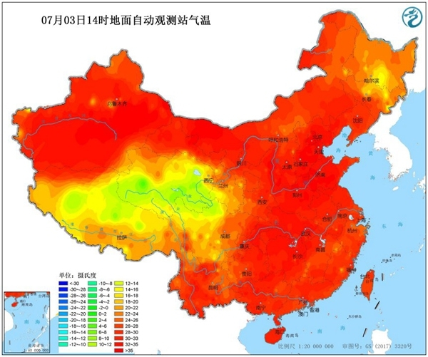

中国天气网气象分析师王伟跃介绍，明天（4日），华北、黄淮地区35℃以上的高温天气还将继续升级，并进入鼎盛阶段，高温强度和范围都将发展到最强。 明天，北京南部、天津大部、河北中部和南部、山东中部和西部、山西南部局地、河南北部、东北部分地区的最高气温都将达到或超过35℃。 大城市中，明天（4日）石家庄的最高气温会向39℃冲击，北京、天津、济南也将达到38℃，酷热难耐。其中，北京和石家庄的气温都有望刷新今年以来的最高气温纪录。（注：此处北京气温统计地为南郊观象台，其他站点可能会超过这个温度。） 由于明天京津冀一带的气温还将继续升级，地表温度也将随之走高，预计，京津冀一带部分地区地表温度或将继续超过60℃。 到了5日，北方35℃以上的高温天气范围将略有缩小，但在河北南部、山东西部、河南北部、山西南部、陕西中南部部分地区、新疆东南部的最高气温依然会达到或超过35℃。
中国天气网气象分析师王伟跃介绍，周六（6日）开始，受降水天气影响，华北、黄淮大部的35℃以上高温天气会逐渐缓解，仅在河南、陕西南部、山西南部等地有分散性高温天气出现。7日以后，盘踞在华北、黄淮35℃以上的高温天气将逐渐销声匿迹。 不过，专家提醒，济南被雨水天气完美绕开，因此未来一周，当地的高温还会天天上岗。在此提醒当地居民注意防暑降温，防范持续高温带来的各种不利影响。